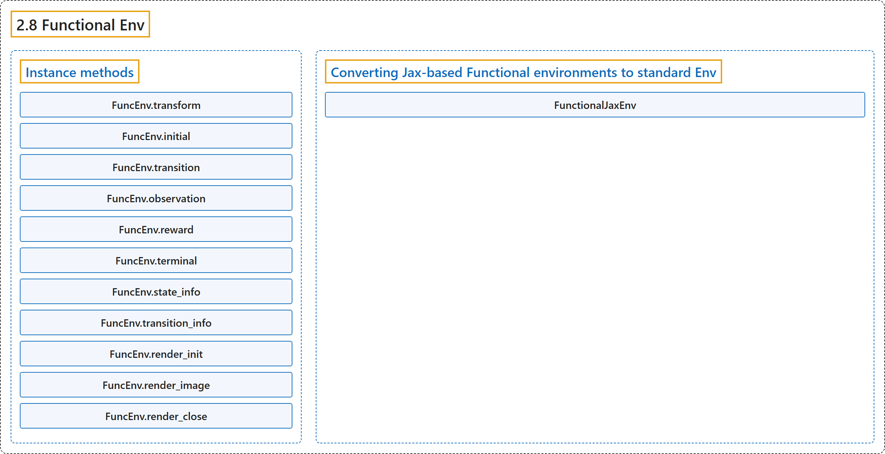

2.8 Functional Env
Classification

Glossary
| Term | Definition | 中文翻译 | Source |
|---|---|---|---|
| 2.8 Functional Env 函数式环境 |
(context) "Base class (template) for functional envs." | （语境）函数式环境的基类（模板）。 | Farama Foundation, n.d., "gymnasium.experimental.functional.FuncEnv", para. 1 |
| Instance methods 实例方法 |
(context) "A functional env consists of the following functions (in this case, instance methods):" | （语境）函数式环境的组成是以下函数（这里是实例方法）： | Farama Foundation, n.d., "gymnasium.experimental.functional.FuncEnv", para. 2 |
| FuncEnv.transform transform 方法 |
"Functional transformations." | 函数式变换。 | Farama Foundation, n.d., "gymnasium.experimental.functional.FuncEnv.transform", para. 1 |
| FuncEnv.initial initial 方法 |
"Generates the initial state of the environment with a random number generator." | 用随机数生成器生成环境的初始状态。 | Farama Foundation, n.d., "gymnasium.experimental.functional.FuncEnv.initial", para. 1 |
| FuncEnv.transition transition 方法 |
"Updates (transitions) the state with an action and random number generator." | 用动作和随机数生成器更新（转移）状态。 | Farama Foundation, n.d., "gymnasium.experimental.functional.FuncEnv.transition", para. 1 |
| FuncEnv.observation observation 方法 |
"Generates an observation for a given state of an environment." | 为环境的给定状态生成观测。 | Farama Foundation, n.d., "gymnasium.experimental.functional.FuncEnv.observation", para. 1 |
| FuncEnv.reward reward 方法 |
"Computes the reward for a given transition between state, action to next_state." | 计算从 state 经 action 到 next_state 这一给定转移的奖励。 | Farama Foundation, n.d., "gymnasium.experimental.functional.FuncEnv.reward", para. 1 |
| FuncEnv.terminal terminal 方法 |
"Returns if the state is a final terminal state." | 返回该状态是否为最终的终止状态。 | Farama Foundation, n.d., "gymnasium.experimental.functional.FuncEnv.terminal", para. 1 |
| FuncEnv.state_info state_info 方法 |
"Info dict about a single state." | 关于单个状态的信息字典。 | Farama Foundation, n.d., "gymnasium.experimental.functional.FuncEnv.state_info", para. 1 |
| FuncEnv.transition_info transition_info 方法 |
"Info dict about a full transition." | 关于一次完整转移的信息字典。 | Farama Foundation, n.d., "gymnasium.experimental.functional.FuncEnv.transition_info", para. 1 |
| FuncEnv.render_init render_init 方法 |
"Initialize the render state." | 初始化渲染状态。 | Farama Foundation, n.d., "gymnasium.experimental.functional.FuncEnv.render_init", para. 1 |
| FuncEnv.render_image render_image 方法 |
"Show the state." | 显示状态。 | Farama Foundation, n.d., "gymnasium.experimental.functional.FuncEnv.render_image", para. 1 |
| FuncEnv.render_close render_close 方法 |
"Close the render state." | 关闭渲染状态。 | Farama Foundation, n.d., "gymnasium.experimental.functional.FuncEnv.render_close", para. 1 |
| Converting Jax-based Functional environments to standard Env 把基于 Jax 的函数式环境转换为标准 Env |
(No definition) | （无定义） | Farama Foundation, n.d., "Converting Jax-based Functional environments to standard Env" |
| FunctionalJaxEnv FunctionalJaxEnv（Jax 函数式环境） |
"A conversion layer for jax-based environments." | 面向基于 jax 的环境的转换层。 | Farama Foundation, n.d., "gymnasium.envs.functional_jax_env.FunctionalJaxEnv", para. 1 |
| FunctionalJaxEnv.reset reset 方法 |
"Resets the environment using the seed." | 用 seed 重置环境。 | Farama Foundation, n.d., "gymnasium.envs.functional_jax_env.FunctionalJaxEnv.reset", para. 1 |
| FunctionalJaxEnv.step step 方法 |
"Steps through the environment using the action." | 用该动作让环境走一步。 | Farama Foundation, n.d., "gymnasium.envs.functional_jax_env.FunctionalJaxEnv.step", para. 1 |
| FunctionalJaxEnv.render render 方法 |
"Returns the render state if render_mode is “rgb_array”." | 返回渲染状态，在 render_mode 为“rgb_array”时。 | Farama Foundation, n.d., "gymnasium.envs.functional_jax_env.FunctionalJaxEnv.render", para. 1 |
References
Farama Foundation. (n.d.). Functional Env. Gymnasium Documentation (Version 1.4.0). Retrieved October 31, 2026, from https://gymnasium.farama.org/api/functional/